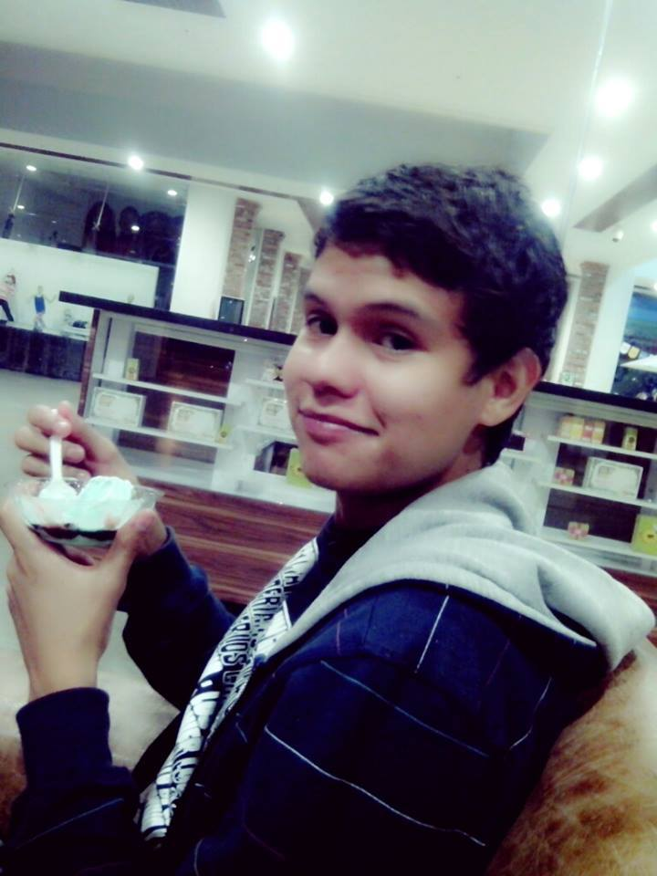

OVI Introducción al Desarrollo de Software
El 10% de código restante es para el otro 90% del tiempo de desarrollo” Tom Cargil
OVI Introducción al Desarrollo de Software
El curso Introducción al Desarrollo de Software codificado bajo el número 204017, es un curso obligatorio de 2 créditos
que pertenece al programa Tecnología en Desarrollo de Software de la Escuela
de ciencias Básicas y Tecnología de la UNAD
Crear un producto tipo software es más que escribir líneas de código, de ahí radica la importancia de la planeación del producto, pasando por cada una de las etapas de lo que se llama Ciclo de Vida de Software, y estas etapas son estudiadas por la disciplina llamada Ingeniería de Software, de ahí la importancia de este curso para su proceso formativo. Si se compara la construcción de Software con la construcción de un edificio, se pueden especificar varios tipos de perfiles, ejemplo: Arquitectos, Ingenieros, Maestros de Obra, Electricistas. Por lo tanto continuando con esta comparación, tenemos: Arquitecto de Software quien es el profesional encargado de Diseñar el software mediante planos, o sea lo que corresponde a UML (Clases, Objetos, Casos de Uso, Relaciones entre Clases, Herencia, etc.), Codificadores, los cuales se encargan de llevar esos planos a la realidad mediante la codificación en un lenguaje en particular (C#, Java, PHP, etc.). Luego vendrían los ingenieros de Pruebas o llamados Tester, los cuales se encargan de ingresar datos al Software y detectar las posibles fallas, tanto de rendimiento, como de resultados entregados, por otro lado están los encargados de conectar con otros programas como las Bases de Datos, y al final los encargados de crear manuales de instalación, y también de colocar en funcionamiento el software en el mercado o al usuario final. Sien embargo esto no termina ahí, ya que el software debe permitir realizar cambios futuros (cambio de moneda, cambios de porcentaje, o cualquier otro requisito que el usuario necesite). Así pues, con todos estas etapas por cumplir, está más que demostrado que es más importante el tiempo que se pasa en la Planeación y el proceso de Desarrollo que en la codificación en sí. De ahí la importancia
Autores

Andres Serrano
- Ingenieria de sistemas
- andres01serrano@hotmail.com
- andres01serrano
Ricardo Molano
- Ingenieria de sistemas
- richard2007.ml@gmail.com
- ricardo.molano.luna